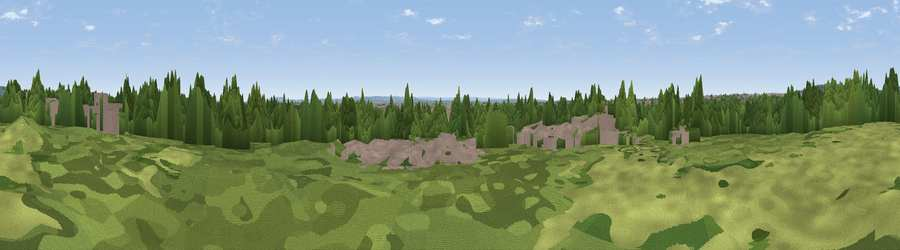

Viewpoint near Camden Town
#44808 in England · top 61% of its area beats it · near Camden Town · access?Where it is
The exact computed spot (TQ 28217 82515). Click the marker for map links.
Public access: no public right of way or access land is recorded at this exact spot — it may be on private land. Computed from Natural England's CRoW access layer and OpenStreetMap rights of way — not the legal definitive map. Always verify locally.
The view, rendered

A 360° render of this exact spot computed from the terrain model, tree cover and land cover — summer colours, afternoon light, calibrated against photographs of famous viewpoints. Real trees, hedges and buildings will differ in detail.
The panorama
Grey silhouette: terrain skyline in each direction (720 bearings, Earth curvature and refraction included). Dashed green: skyline with trees (+15 m) and buildings (+8 m) as obstacles. Blue strip: how far the ground is visible on each bearing.
Where the view opens
Wedge length = distance to the farthest visible ground on that bearing (vegetation-aware). Rings at 10, 25 and 50 km.
What fills the view
43% built-up · 41% woodland · 15% grassland ·
Angular shares of the visible panorama (visual magnitude), not map area. Landscape diversity 0.46 (0–1 Shannon).
Key numbers
More beautiful places nearby
The staircase of upgrades: each row has a higher view potential than everything closer. Driving times are estimates from straight-line distance, calibrated against real road routing — check an actual route before setting out.
| Place | Direction | Drive | Score |
|---|---|---|---|
| Primrose Hill | NNW · 1 km | ~4 min | 27.2 |
| Parliament Hill | N · 4 km | ~9 min | 33.3 |
| Viewpoint near East Finchley | N · 5 km | ~11 min | 38.5 |
| Harrow on the Hill | WNW · 14 km | ~25 min | 42.3 |
| Viewpoint near Chaldon | S · 29 km | ~46 min | 60.2 |
| Viewpoint near Limpsfield | SSE · 30 km | ~47 min | 64.0 |
| Viewpoint near Lower Kingswood | S · 31 km | ~48 min | 67.7 |
| Viewpoint near Coldharbour | SSW · 41 km | ~61 min | 70.0 |
51.52700, -0.15312 · source: osm viewpoint · position refined by local search. Computed location — check access rights before visiting.